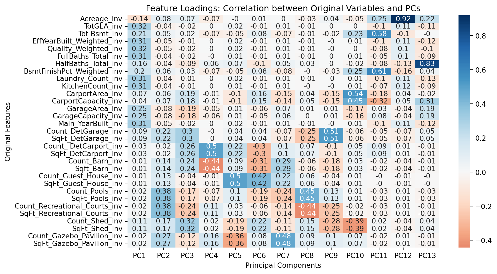
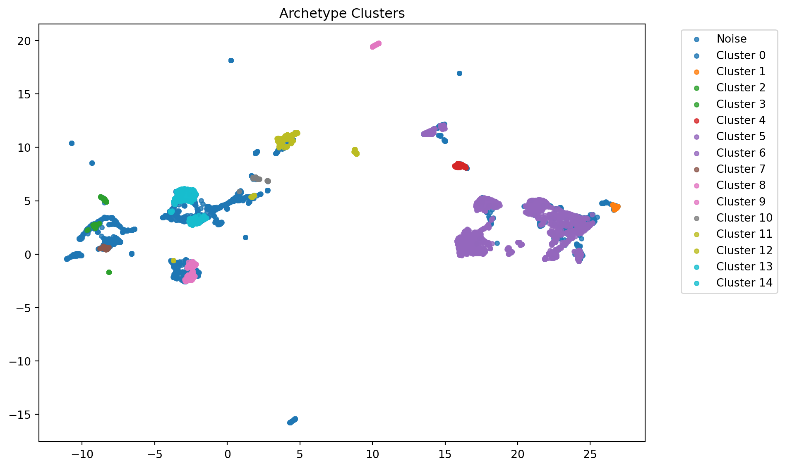
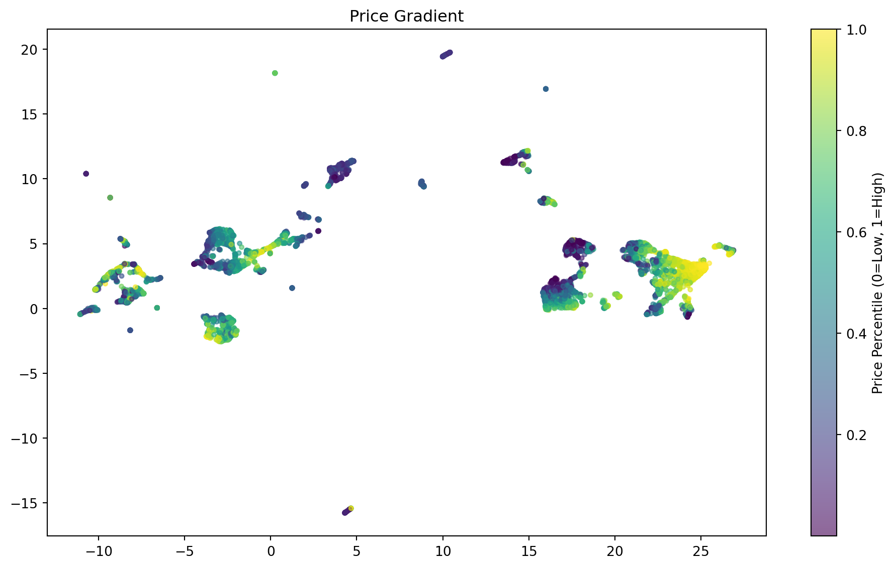
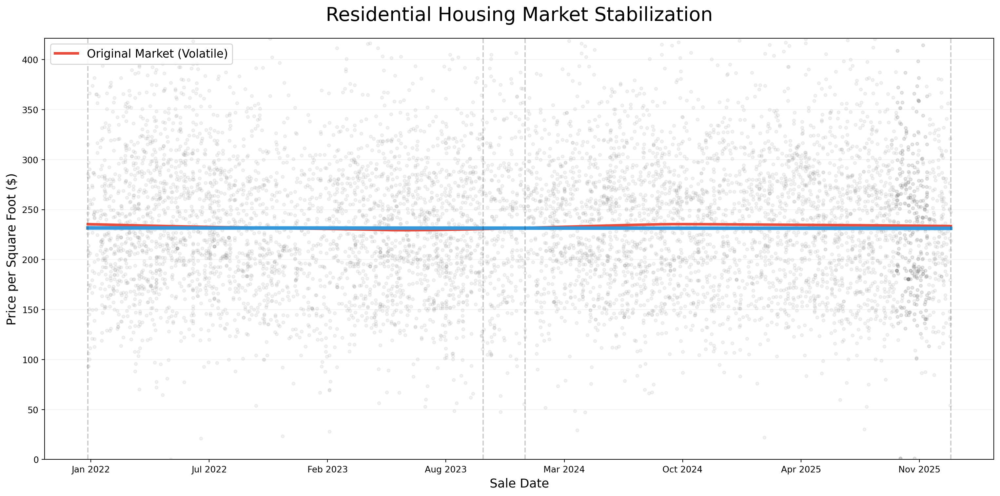

We discussed three distinct architectures to determine which could best model the Iron County real estate.
Elastic Net: A hybrid of Lasso and Ridge regression. It handles it handles overlapping variables by penalizing redundant variables. It is excellent for transparency, but struggles with the “curvy” non-linear nature of modern market shifts.
Random Forest Trains 100+ independent decision trees on random subsets of data and averages their “votes.” It captures feature fnteractions. It understands that a “3rd Garage Bay” adds more value to a luxury ranch than to a high-density efficiency unit.
Gradient Boosting Trees are built sequentially. Each new tree specifically targets the “errors” of the previous one to minimize the Mean Absolute Error. Gradient Boosting is very precise. It pushes the \(R^2\) to its mathematical limit by refining the model’s focus on outliers.
Deployment direction discussed in our most recent stakeholder meeting:
Commissioner’s Office - House Pricing Project